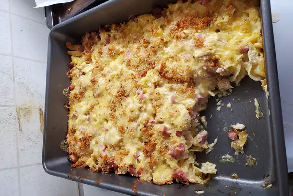

Creamy Chicken Cordon Bleu Casserole

Description
Creamy Chicken Cordon Bleu Casserole recipe for the perfect dinner.
Ingredients
- 1 (8 ounce) package wide egg noodles
- 2 cups chopped cooked chicken breast
- 8 ounces cooked ham, cubed
- 8 ounces Swiss cheese, cubed
- 1 (10.75 ounce) can reduced-fat, reduced-sodium cream of chicken soup (such as Campbell's® Healthy Request)
- ½ cup 2% milk
- ½ cup light sour cream
- 2 tablespoons butter
- ⅓ cup seasoned bread crumbs
- ¼ cup grated Parmesan cheese
Steps
- Preheat oven to 350 degrees F (175 degrees C). Lightly grease a 9x13-inch casserole dish.
- Bring a large pot of lightly salted water to a boil. Cook egg noodles in the boiling water, stirring occasionally until cooked through but firm to the bite, about 5 minutes. Drain and transfer noodles to the prepared casserole dish; top with chicken, ham, and Swiss cheese.
- Mix cream of chicken soup, milk, and sour cream together in a bowl; spoon soup mixture over noodle mixture.
- Melt butter in a skillet over medium heat; cook and stir bread crumbs and Parmesan cheese in the melted butter until crumbs are coated with butter and cheese, 2 to 3 minutes. Sprinkle bread crumb mixture over casserole.
- Bake in the preheated oven until casserole is bubbling and lightly browned, about 30 minutes. Allow casserole to cool for 10 minutes before serving.